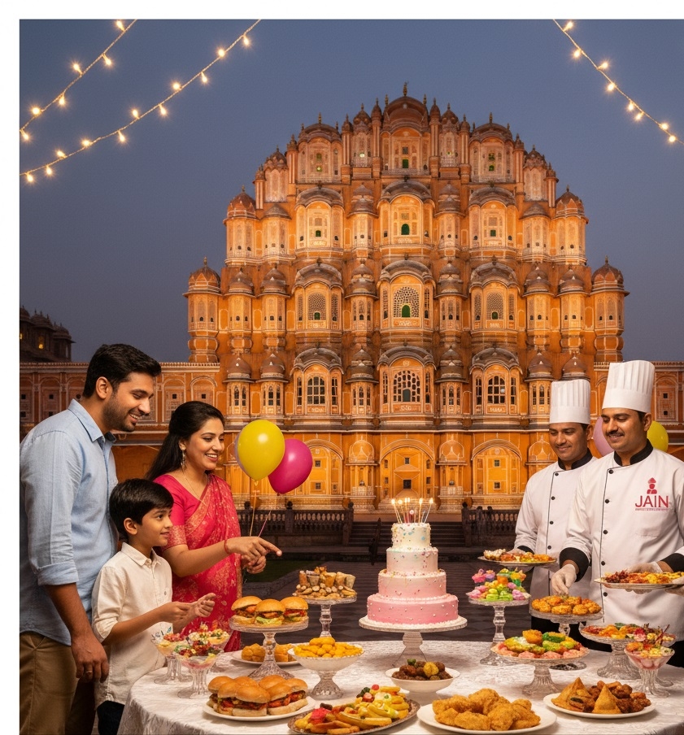

Make Every Birthday Extra Special with the Best Catering For Birthday Party

A birthday is more than just a date, it’s a celebration of life, joy, and togetherness. Whether it’s
your child’s first birthday, a sweet sixteen, an 18th milestone, or a grand 50th birthday bash, Jain
Events and Caterers ensures your party is unforgettable with our catering for birthday party.
We specialize in 100% pure vegetarian catering, making us the preferred choice for families who
value tradition, hygiene, and delicious food. With 10+ years of experience and 400+ successful
events across Jaipur and Rajasthan, we bring expertise, creativity, and flavor to every birthday
celebration.
Why Choose Jain Events and Caterers for Birthday
Parties?
Planning a birthday party can be exciting but also stressful. With Jain Events and Caterers, you can
enjoy the celebration while we take care of the food and arrangements.
Here’s why we are trusted as one of the best birthday party caterers in Jaipur:
- 🂠Customized Birthday Menus – From kids-friendly snacks to multi-course menus for adults, we
design menus to match your theme.
- 🉠Fun Live Counters – Chaat, dosa, pasta, pizza, Chinese stalls, and more to keep guests
entertained.
- 🎁 Desserts & Cakes – Cartoon-shaped cakes, cupcakes, chocolate fountains, and themed desserts.
- 🨠Themed Décor & Setup – Balloon decorations, cartoon themes, and elegant arrangements for all
age groups.
- 👨‍🍳 Professional & Hygienic Service – Prepared fresh with the highest hygiene standards.
- â Trusted & Rated – With repeat clients, we are among Jaipur’s most reliable birthday caterers.
Our Birthday Catering Services in Jaipur
We cater to birthdays of all sizes and age groups, making each one unique:
-
Kids’ Birthday Catering
For kids, food should be fun! We prepare cartoon-themed snacks, colorful cupcakes, mini pizzas,
burgers, fries, and milkshakes that kids love. Live counters like popcorn, cotton candy, and
waffle stations add extra excitement.
-
Teen & Young Adult Birthdays
We design trendy menus with fusion food, mocktails, and global cuisines like Chinese, Italian,
and Continental to match young preferences. Live pasta counters, fries bars, and mocktail
stations are party favorites.
-
Adult & Milestone Birthdays
For milestone birthdays like 30th, 40th, or 50th, we create elegant and lavish setups with
multi-course vegetarian menus, traditional Rajasthani thalis, or theme-based buffets. Desserts
and mocktail counters add a stylish touch.
-
Destination & Outdoor Birthdays
Planning a birthday at a farmhouse, banquet hall, or resort? We provide complete catering and
event setup at any location in Jaipur or Rajasthan.
Our Food Philosophy
Food is the highlight of every birthday party, and we prepare it with love, purity, and creativity.
- Customizable Menus – North Indian, South Indian, Rajasthani, Chinese, Italian, and fusion
options.
- Healthy & Hygienic – Freshly cooked with quality ingredients.
- Desserts & Sweets – Cupcakes, pastries, cakes, gulab jamun, rasmalai, jalebi, ice creams, and
chocolate fountains.
- Fun Food Counters – Chaat stalls, dosa live counter, pizza/pasta stations, and more.
Our team ensures that both kids and adults have a great dining experience at your birthday party.
How We Make Birthdays Memorable?
At Jain Events and Caterers, we focus on more than just food, we create experiences:
- 🈠Theme-Based Food Presentation – Superhero themes for kids, elegant buffet setups for adults.
- 🶠Complete Party Setup – Décor, sound, lighting, and entertainment support available.
- 🹠Mocktail Bars & Dessert Stations – Adding fun and color to your celebration.
- 🎁 Personalized Touches – Customized cake designs, return gift counters, and unique plating.
Our goal is simple: to make your birthday celebration stress-free, joyful, and unforgettable.
Our Experience in Jaipur & Rajasthan
From cozy home celebrations to grand birthday parties at banquet halls and hotels, we’ve catered
birthdays all across Jaipur with love and flavor.
Whether it’s a small intimate gathering with close family or a lavish celebration with hundreds of
guests, our expert team has the skills, experience, and dedication to manage everything seamlessly.
From planning the menu to arranging live food counters, from serving kids’ favorite treats to
elegant dishes for adults, we design every detail to match the theme and spirit of your celebration.
At Jain Events and Caterers, we believe that birthdays are not just about food, but about creating
cherished memories with loved ones. That’s why we go beyond catering, we create experiences that
make your special day extraordinary.
Book Your Birthday Catering in Jaipur Today
Every birthday deserves to be celebrated with joy, laughter, and delicious food. At Jain Events and
Caterers, we ensure your special day is filled with beautiful memories and flavors your guests will
remember.
- 📠Contact us today at 9928389754 | 7230888688
- 📠Visit us at: Plot No.38, Galli No.6, near Apple Hut, Khushi Vihar, Jaipur, Rajasthan 302020
- 💌 Email: jaineventsandcaterers@gmail.com
Let’s make your birthday celebration a day to cherish forever with Jaipur’s best birthday catering
services.
 WhatsApp Us
WhatsApp Us